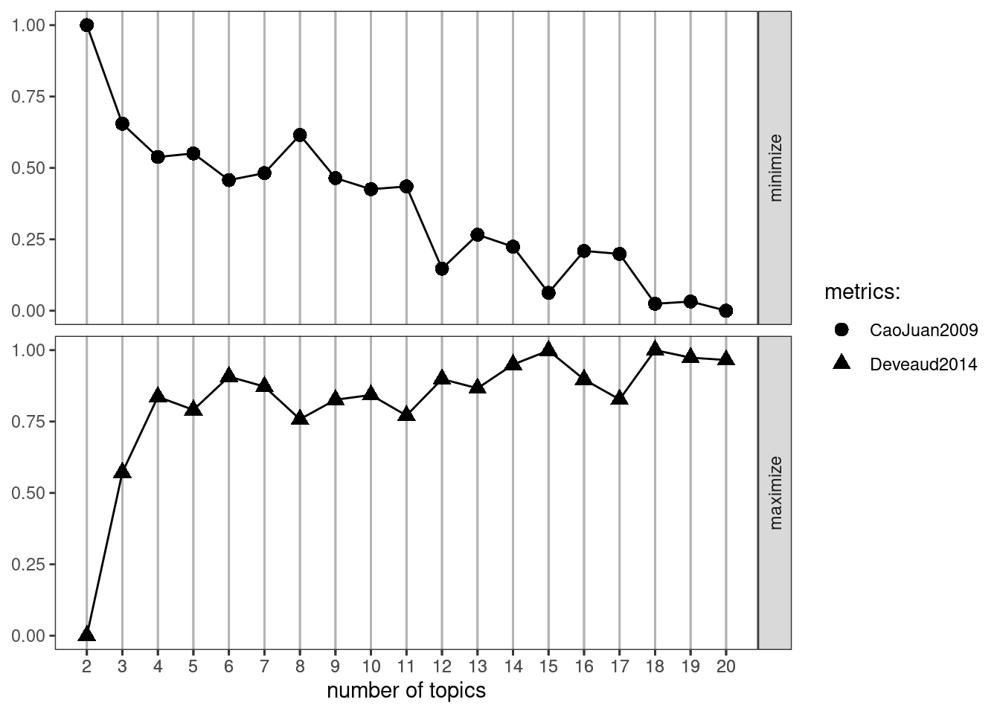
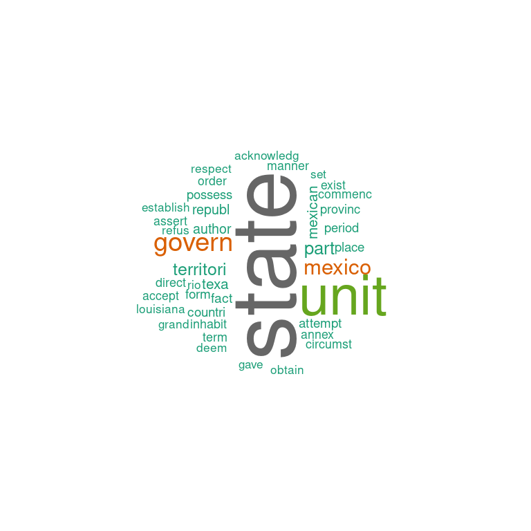
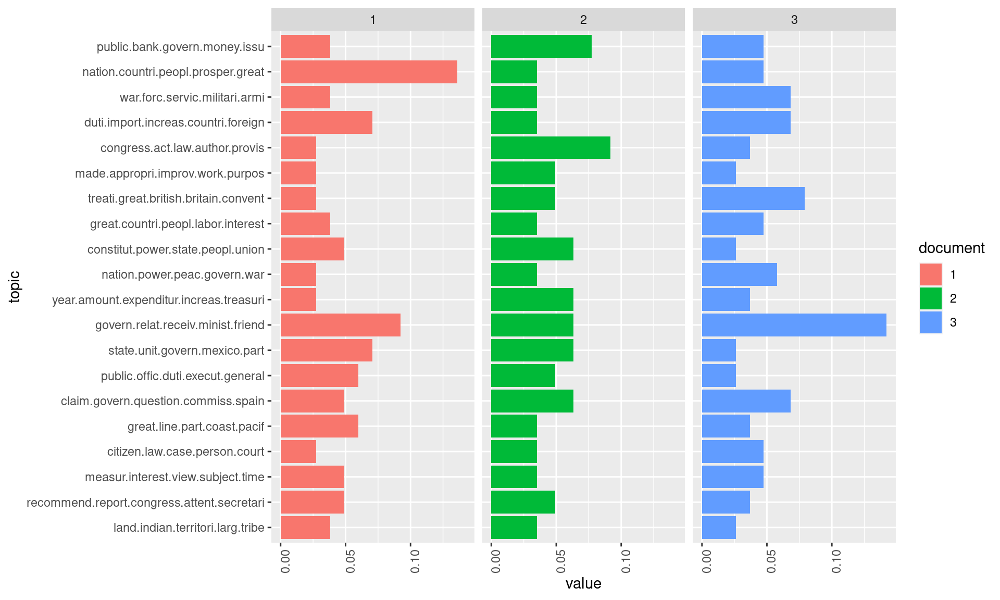
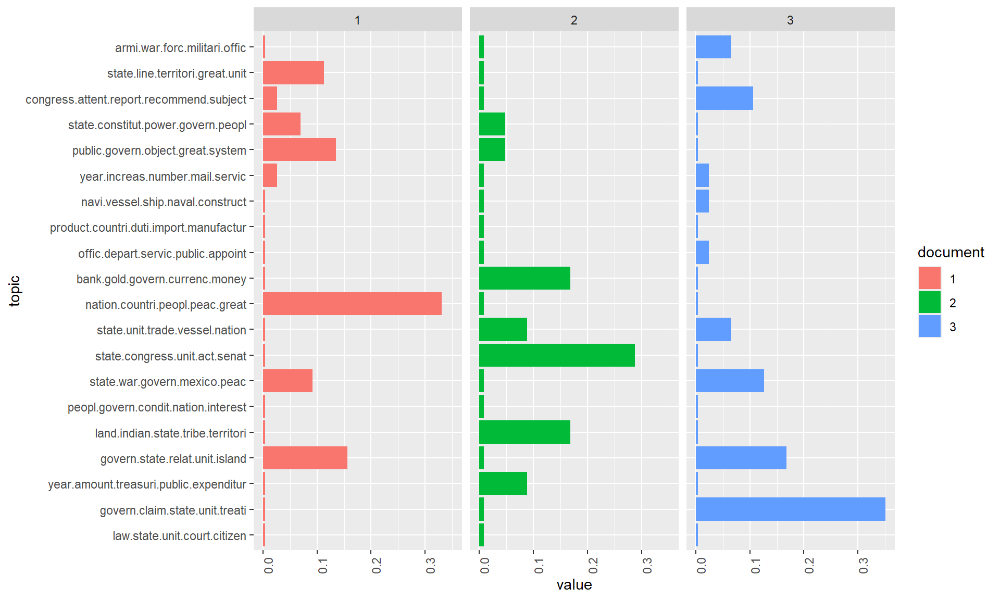
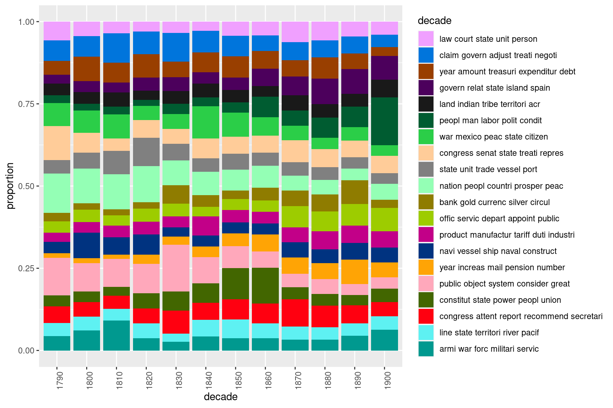

Topic Modeling with R
Martin Schweinberger
2023-02-05

Introduction
This tutorial introduces topic modeling using R.

This tutorial is aimed at beginners and intermediate users of R with the aim of showcasing how to perform basic topic modeling on textual data using R and how to visualize the results of such a model. The aim is not to provide a fully-fledged analysis but rather to show and exemplify selected useful methods associated with topic modeling.
The entire R Notebook for the tutorial can be downloaded here.
If you want to render the R Notebook on your machine, i.e. knitting the
document to html or a pdf, you need to make sure that you have R and
RStudio installed and you also need to download the bibliography
file and store it in the same folder where you store the
Rmd file.

Click
this link to open an interactive version of this tutorial on
MyBinder.org.
This interactive Jupyter notebook allows
you to execute code yourself and you can also change and edit the
notebook, e.g. you can change code and upload your own data.
This tutorial builds heavily on and uses materials from this tutorial on web crawling and scraping using R by Andreas Niekler and Gregor Wiedemann (see Wiedemann and Niekler 2017). The tutorial by Andreas Niekler and Gregor Wiedemann is more thorough, goes into more detail than this tutorial, and covers many more very useful text mining methods. an alternative and equally recommendable introduction to topic modeling with R is, of course, Silge and Robinson (2017).
Topic models aim to find topics (which are operationalized as bundles of correlating terms) in documents to see what the texts are about.
Topic models are a common procedure in In machine learning and natural language processing. Topic models represent a type of statistical model that is use to discover more or less abstract topics in a given selection of documents. Topic models are particularly common in text mining to unearth hidden semantic structures in textual data. Topics can be conceived of as networks of collocation terms that, because of the co-occurrence across documents, can be assumed to refer to the same semantic domain (or topic). This assumes that, if a document is about a certain topic, one would expect words, that are related to that topic, to appear in the document more often than in documents that deal with other topics. For instance, dog and bone will appear more often in documents about dogs whereas cat and meow will appear in documents about cats. Terms like the and is will, however, appear approximately equally in both.
Topic models are also referred to as probabilistic topic models, which refers to statistical algorithms for discovering the latent semantic structures of an extensive text body. Given the availability of vast amounts of textual data, topic models can help to organize and offer insights and assist in understanding large collections of unstructured text.
Preparation and session set up
This tutorial is based on R. If you have not installed R or are new to it, you will find an introduction to and more information how to use R here. For this tutorials, we need to install certain packages from an R library so that the scripts shown below are executed without errors. Before turning to the code below, please install the packages by running the code below this paragraph. If you have already installed the packages mentioned below, then you can skip ahead and ignore this section. To install the necessary packages, simply run the following code - it may take some time (between 1 and 5 minutes to install all of the packages so you do not need to worry if it takes some time).
# install packages
install.packages("tm")
install.packages("topicmodels")
install.packages("reshape2")
install.packages("ggplot2")
install.packages("wordcloud")
install.packages("pals")
install.packages("SnowballC")
install.packages("lda")
install.packages("ldatuning")
install.packages("kableExtra")
install.packages("DT")
install.packages("flextable")
# install klippy for copy-to-clipboard button in code chunks
install.packages("remotes")
remotes::install_github("rlesur/klippy")Next, we activate the packages.
# set options
options(stringsAsFactors = F) # no automatic data transformation
options("scipen" = 100, "digits" = 4) # suppress math annotation
# load packages
library(knitr)
library(kableExtra)
library(DT)
library(tm)
library(topicmodels)
library(reshape2)
library(ggplot2)
library(wordcloud)
library(pals)
library(SnowballC)
library(lda)
library(ldatuning)
library(flextable)
# activate klippy for copy-to-clipboard button
klippy::klippy()Once you have installed R and RStudio and once you have initiated the session by executing the code shown above, you are good to go.
Topic Modelling
The process starts as usual with the reading of the corpus data. For this tutorial we will analyze State of the Union Addresses (SOTU) by US presidents and investigate how the topics that were addressed in the SOTU speeches changeover time. The 231 SOTU addresses are rather long documents. Documents lengths clearly affects the results of topic modeling. For very short texts (e.g. Twitter posts) or very long texts (e.g. books), it can make sense to concatenate/split single documents to receive longer/shorter textual units for modeling.
For the SOTU speeches for instance, we infer the model based on
paragraphs instead of entire speeches. By manual inspection /
qualitative inspection of the results you can check if this procedure
yields better (interpretable) topics. In
sotu_paragraphs.csv, we provide a paragraph separated
version of the speeches.
For text preprocessing, we remove stopwords, since they tend to occur as “noise” in the estimated topics of the LDA model.
# load data
textdata <- base::readRDS(url("https://slcladal.github.io/data/sotu_paragraphs.rda", "rb"))
# load stopwords
english_stopwords <- readLines("https://slcladal.github.io/resources/stopwords_en.txt", encoding = "UTF-8")
# create corpus object
corpus <- Corpus(DataframeSource(textdata))
# Preprocessing chain
processedCorpus <- tm_map(corpus, content_transformer(tolower))
processedCorpus <- tm_map(processedCorpus, removeWords, english_stopwords)
processedCorpus <- tm_map(processedCorpus, removePunctuation, preserve_intra_word_dashes = TRUE)
processedCorpus <- tm_map(processedCorpus, removeNumbers)
processedCorpus <- tm_map(processedCorpus, stemDocument, language = "en")
processedCorpus <- tm_map(processedCorpus, stripWhitespace)Model calculation
After the preprocessing, we have two corpus objects:
processedCorpus, on which we calculate an LDA topic model
(Blei, Ng, and Jordan 2003). To this end,
stopwords, i.e. function words that have relational rather than
content meaning, were removed, words were stemmed and converted to
lowercase letters and special characters were removed. The second corpus
object corpus serves to be able to view the original texts
and thus to facilitate a qualitative control of the topic model
results.
We now calculate a topic model on the processedCorpus.
For this purpose, a DTM of the corpus is created. In this case, we only
want to consider terms that occur with a certain minimum frequency in
the body. This is primarily used to speed up the model calculation.
# compute document term matrix with terms >= minimumFrequency
minimumFrequency <- 5
DTM <- DocumentTermMatrix(processedCorpus, control = list(bounds = list(global = c(minimumFrequency, Inf))))
# have a look at the number of documents and terms in the matrix
dim(DTM)## [1] 8833 4278# due to vocabulary pruning, we have empty rows in our DTM
# LDA does not like this. So we remove those docs from the
# DTM and the metadata
sel_idx <- slam::row_sums(DTM) > 0
DTM <- DTM[sel_idx, ]
textdata <- textdata[sel_idx, ]As an unsupervised machine learning method, topic models are suitable for the exploration of data. The calculation of topic models aims to determine the proportionate composition of a fixed number of topics in the documents of a collection. It is useful to experiment with different parameters in order to find the most suitable parameters for your own analysis needs.
For parameterized models such as Latent Dirichlet Allocation (LDA),
the number of topics K is the most important parameter to
define in advance. How an optimal K should be selected
depends on various factors. If K is too small, the
collection is divided into a few very general semantic contexts. If
K is too large, the collection is divided into too many
topics of which some may overlap and others are hardly
interpretable.
An alternative to deciding on a set number of topics is to extract
parameters form a models using a rage of number of topics. This approach
can be useful when the number of topics is not theoretically motivated
or based on closer, qualitative inspection of the data. In the example
below, the determination of the optimal number of topics follows Murzintcev (n.d.), but we only use two metrics
(CaoJuan2009 and Deveaud2014) - it is highly
recommendable to inspect the results of the four metrics available for
the FindTopicsNumber function (Griffiths2004,
CaoJuan2009, Arun2010, and Deveaud2014).
# create models with different number of topics
result <- ldatuning::FindTopicsNumber(
DTM,
topics = seq(from = 2, to = 20, by = 1),
metrics = c("CaoJuan2009", "Deveaud2014"),
method = "Gibbs",
control = list(seed = 77),
verbose = TRUE
)## fit models... done.
## calculate metrics:
## CaoJuan2009... done.
## Deveaud2014... done.We can now plot the results. In this case, we have only use two methods CaoJuan2009 and Griffith2004. The best number of topics shows low values for CaoJuan2009 and high values for Griffith2004 (optimally, several methods should converge and show peaks and dips respectively for a certain number of topics).
FindTopicsNumber_plot(result)
For our first analysis, however, we choose a thematic “resolution” of
K = 20 topics. In contrast to a resolution of 100 or more,
this number of topics can be evaluated qualitatively very easy.
# number of topics
K <- 20
# set random number generator seed
set.seed(9161)
# compute the LDA model, inference via 1000 iterations of Gibbs sampling
topicModel <- LDA(DTM, K, method="Gibbs", control=list(iter = 500, verbose = 25))## K = 20; V = 4278; M = 8810
## Sampling 500 iterations!
## Iteration 25 ...
## Iteration 50 ...
## Iteration 75 ...
## Iteration 100 ...
## Iteration 125 ...
## Iteration 150 ...
## Iteration 175 ...
## Iteration 200 ...
## Iteration 225 ...
## Iteration 250 ...
## Iteration 275 ...
## Iteration 300 ...
## Iteration 325 ...
## Iteration 350 ...
## Iteration 375 ...
## Iteration 400 ...
## Iteration 425 ...
## Iteration 450 ...
## Iteration 475 ...
## Iteration 500 ...
## Gibbs sampling completed!Depending on the size of the vocabulary, the collection size and the number K, the inference of topic models can take a very long time. This calculation may take several minutes. If it takes too long, reduce the vocabulary in the DTM by increasing the minimum frequency in the previous step.
The topic model inference results in two (approximate) posterior
probability distributions: a distribution theta over K
topics within each document and a distribution beta over V
terms within each topic, where V represents the length of the vocabulary
of the collection (V = 4278). Let’s take a closer look at these
results:
# have a look a some of the results (posterior distributions)
tmResult <- posterior(topicModel)
# format of the resulting object
attributes(tmResult)## $names
## [1] "terms" "topics"nTerms(DTM) # lengthOfVocab## [1] 4278# topics are probability distributions over the entire vocabulary
beta <- tmResult$terms # get beta from results
dim(beta) # K distributions over nTerms(DTM) terms## [1] 20 4278rowSums(beta) # rows in beta sum to 1## 1 2 3 4 5 6 7 8 9 10 11 12 13 14 15 16 17 18 19 20
## 1 1 1 1 1 1 1 1 1 1 1 1 1 1 1 1 1 1 1 1nDocs(DTM) # size of collection## [1] 8810# for every document we have a probability distribution of its contained topics
theta <- tmResult$topics
dim(theta) # nDocs(DTM) distributions over K topics## [1] 8810 20rowSums(theta)[1:10] # rows in theta sum to 1## 1 2 3 4 5 6 7 8 9 10
## 1 1 1 1 1 1 1 1 1 1Let’s take a look at the 10 most likely terms within the term
probabilities beta of the inferred topics (only the first 8
are shown below).
terms(topicModel, 10)## Topic 1 Topic 2 Topic 3 Topic 4 Topic 5 Topic 6
## [1,] "land" "recommend" "measur" "citizen" "great" "claim"
## [2,] "indian" "report" "interest" "law" "line" "govern"
## [3,] "territori" "congress" "view" "case" "part" "question"
## [4,] "larg" "attent" "subject" "person" "coast" "commiss"
## [5,] "tribe" "secretari" "time" "court" "pacif" "spain"
## [6,] "limit" "depart" "present" "properti" "construct" "island"
## [7,] "popul" "subject" "object" "protect" "import" "made"
## [8,] "portion" "consider" "reason" "natur" "river" "adjust"
## [9,] "general" "present" "adopt" "justic" "complet" "commission"
## [10,] "public" "import" "regard" "demand" "south" "final"
## Topic 7 Topic 8 Topic 9 Topic 10 Topic 11 Topic 12
## [1,] "public" "state" "govern" "year" "nation" "constitut"
## [2,] "offic" "unit" "relat" "amount" "power" "power"
## [3,] "duti" "govern" "receiv" "expenditur" "peac" "state"
## [4,] "execut" "mexico" "minist" "increas" "govern" "peopl"
## [5,] "general" "part" "friend" "treasuri" "war" "union"
## [6,] "administr" "territori" "republ" "end" "foreign" "repres"
## [7,] "give" "texa" "continu" "estim" "independ" "govern"
## [8,] "respect" "mexican" "intercours" "fiscal" "maintain" "presid"
## [9,] "direct" "republ" "hope" "revenu" "polici" "hous"
## [10,] "proper" "author" "inform" "june" "intern" "elect"
## Topic 13 Topic 14 Topic 15 Topic 16 Topic 17 Topic 18
## [1,] "great" "treati" "made" "congress" "duti" "war"
## [2,] "countri" "great" "appropri" "act" "import" "forc"
## [3,] "peopl" "british" "improv" "law" "increas" "servic"
## [4,] "labor" "britain" "work" "author" "countri" "militari"
## [5,] "interest" "convent" "purpos" "provis" "foreign" "armi"
## [6,] "condit" "trade" "provid" "session" "product" "navi"
## [7,] "good" "vessel" "make" "legisl" "produc" "men"
## [8,] "system" "port" "establish" "execut" "manufactur" "offic"
## [9,] "busi" "negoti" "secur" "effect" "revenu" "ship"
## [10,] "individu" "american" "object" "pass" "larg" "command"
## Topic 19 Topic 20
## [1,] "nation" "public"
## [2,] "countri" "bank"
## [3,] "peopl" "govern"
## [4,] "prosper" "money"
## [5,] "great" "issu"
## [6,] "institut" "treasuri"
## [7,] "preserv" "gold"
## [8,] "honor" "note"
## [9,] "happi" "debt"
## [10,] "spirit" "interest"exampleTermData <- terms(topicModel, 10)
exampleTermData[, 1:8]## Topic 1 Topic 2 Topic 3 Topic 4 Topic 5 Topic 6
## [1,] "land" "recommend" "measur" "citizen" "great" "claim"
## [2,] "indian" "report" "interest" "law" "line" "govern"
## [3,] "territori" "congress" "view" "case" "part" "question"
## [4,] "larg" "attent" "subject" "person" "coast" "commiss"
## [5,] "tribe" "secretari" "time" "court" "pacif" "spain"
## [6,] "limit" "depart" "present" "properti" "construct" "island"
## [7,] "popul" "subject" "object" "protect" "import" "made"
## [8,] "portion" "consider" "reason" "natur" "river" "adjust"
## [9,] "general" "present" "adopt" "justic" "complet" "commission"
## [10,] "public" "import" "regard" "demand" "south" "final"
## Topic 7 Topic 8
## [1,] "public" "state"
## [2,] "offic" "unit"
## [3,] "duti" "govern"
## [4,] "execut" "mexico"
## [5,] "general" "part"
## [6,] "administr" "territori"
## [7,] "give" "texa"
## [8,] "respect" "mexican"
## [9,] "direct" "republ"
## [10,] "proper" "author"For the next steps, we want to give the topics more descriptive names than just numbers. Therefore, we simply concatenate the five most likely terms of each topic to a string that represents a pseudo-name for each topic.
top5termsPerTopic <- terms(topicModel, 5)
topicNames <- apply(top5termsPerTopic, 2, paste, collapse=" ")Visualization of Words and Topics
Although wordclouds may not be optimal for scientific purposes they can provide a quick visual overview of a set of terms. Let’s look at some topics as wordcloud.
In the following code, you can change the variable topicToViz with values between 1 and 20 to display other topics.
# visualize topics as word cloud
topicToViz <- 11 # change for your own topic of interest
topicToViz <- grep('mexico', topicNames)[1] # Or select a topic by a term contained in its name
# select to 40 most probable terms from the topic by sorting the term-topic-probability vector in decreasing order
top40terms <- sort(tmResult$terms[topicToViz,], decreasing=TRUE)[1:40]
words <- names(top40terms)
# extract the probabilites of each of the 40 terms
probabilities <- sort(tmResult$terms[topicToViz,], decreasing=TRUE)[1:40]
# visualize the terms as wordcloud
mycolors <- brewer.pal(8, "Dark2")
wordcloud(words, probabilities, random.order = FALSE, color = mycolors)
Let us now look more closely at the distribution of topics within individual documents. To this end, we visualize the distribution in 3 sample documents.
Let us first take a look at the contents of three sample documents:
exampleIds <- c(2, 100, 200)
lapply(corpus[exampleIds], as.character)## $`2`
## [1] "I embrace with great satisfaction the opportunity which now presents itself\nof congratulating you on the present favorable prospects of our public\naffairs. The recent accession of the important state of North Carolina to\nthe Constitution of the United States (of which official information has\nbeen received), the rising credit and respectability of our country, the\ngeneral and increasing good will toward the government of the Union, and\nthe concord, peace, and plenty with which we are blessed are circumstances\nauspicious in an eminent degree to our national prosperity."
##
## $`100`
## [1] "Provision is likewise requisite for the reimbursement of the loan which has\nbeen made of the Bank of the United States, pursuant to the eleventh\nsection of the act by which it is incorporated. In fulfilling the public\nstipulations in this particular it is expected a valuable saving will be\nmade."
##
## $`200`
## [1] "After many delays and disappointments arising out of the European war, the\nfinal arrangements for fulfilling the engagements made to the Dey and\nRegency of Algiers will in all present appearance be crowned with success,\nbut under great, though inevitable, disadvantages in the pecuniary\ntransactions occasioned by that war, which will render further provision\nnecessary. The actual liberation of all our citizens who were prisoners in\nAlgiers, while it gratifies every feeling of heart, is itself an earnest of\na satisfactory termination of the whole negotiation. Measures are in\noperation for effecting treaties with the Regencies of Tunis and Tripoli."exampleIds <- c(2, 100, 200)
print(paste0(exampleIds[1], ": ", substr(content(corpus[[exampleIds[1]]]), 0, 400), '...'))## [1] "2: I embrace with great satisfaction the opportunity which now presents itself\nof congratulating you on the present favorable prospects of our public\naffairs. The recent accession of the important state of North Carolina to\nthe Constitution of the United States (of which official information has\nbeen received), the rising credit and respectability of our country, the\ngeneral and increasing good will ..."print(paste0(exampleIds[2], ": ", substr(content(corpus[[exampleIds[2]]]), 0, 400), '...'))## [1] "100: Provision is likewise requisite for the reimbursement of the loan which has\nbeen made of the Bank of the United States, pursuant to the eleventh\nsection of the act by which it is incorporated. In fulfilling the public\nstipulations in this particular it is expected a valuable saving will be\nmade...."print(paste0(exampleIds[3], ": ", substr(content(corpus[[exampleIds[3]]]), 0, 400), '...'))## [1] "200: After many delays and disappointments arising out of the European war, the\nfinal arrangements for fulfilling the engagements made to the Dey and\nRegency of Algiers will in all present appearance be crowned with success,\nbut under great, though inevitable, disadvantages in the pecuniary\ntransactions occasioned by that war, which will render further provision\nnecessary. The actual liberation of all ..."After looking into the documents, we visualize the topic distributions within the documents.
N <- length(exampleIds)
# get topic proportions form example documents
topicProportionExamples <- theta[exampleIds,]
colnames(topicProportionExamples) <- topicNames
vizDataFrame <- melt(cbind(data.frame(topicProportionExamples), document = factor(1:N)), variable.name = "topic", id.vars = "document")
ggplot(data = vizDataFrame, aes(topic, value, fill = document), ylab = "proportion") +
geom_bar(stat="identity") +
theme(axis.text.x = element_text(angle = 90, hjust = 1)) +
coord_flip() +
facet_wrap(~ document, ncol = N)
Topic distributions
The figure above shows how topics within a document are distributed according to the model. In the current model all three documents show at least a small percentage of each topic. However, two to three topics dominate each document.
The topic distribution within a document can be controlled with the Alpha-parameter of the model. Higher alpha priors for topics result in an even distribution of topics within a document. Low alpha priors ensure that the inference process distributes the probability mass on a few topics for each document.
In the previous model calculation the alpha-prior was automatically estimated in order to fit to the data (highest overall probability of the model). However, this automatic estimate does not necessarily correspond to the results that one would like to have as an analyst. Depending on our analysis interest, we might be interested in a more peaky/more even distribution of topics in the model.
Now let us change the alpha prior to a lower value to see how this affects the topic distributions in the model.
# see alpha from previous model
attr(topicModel, "alpha") ## [1] 2.5topicModel2 <- LDA(DTM, K, method="Gibbs", control=list(iter = 500, verbose = 25, alpha = 0.2))## K = 20; V = 4278; M = 8810
## Sampling 500 iterations!
## Iteration 25 ...
## Iteration 50 ...
## Iteration 75 ...
## Iteration 100 ...
## Iteration 125 ...
## Iteration 150 ...
## Iteration 175 ...
## Iteration 200 ...
## Iteration 225 ...
## Iteration 250 ...
## Iteration 275 ...
## Iteration 300 ...
## Iteration 325 ...
## Iteration 350 ...
## Iteration 375 ...
## Iteration 400 ...
## Iteration 425 ...
## Iteration 450 ...
## Iteration 475 ...
## Iteration 500 ...
## Gibbs sampling completed!tmResult <- posterior(topicModel2)
theta <- tmResult$topics
beta <- tmResult$terms
topicNames <- apply(terms(topicModel2, 5), 2, paste, collapse = " ") # reset topicnamesNow visualize the topic distributions in the three documents again. What are the differences in the distribution structure?
# get topic proportions form example documents
topicProportionExamples <- theta[exampleIds,]
colnames(topicProportionExamples) <- topicNames
vizDataFrame <- melt(cbind(data.frame(topicProportionExamples), document = factor(1:N)), variable.name = "topic", id.vars = "document")
ggplot(data = vizDataFrame, aes(topic, value, fill = document), ylab = "proportion") +
geom_bar(stat="identity") +
theme(axis.text.x = element_text(angle = 90, hjust = 1)) +
coord_flip() +
facet_wrap(~ document, ncol = N)
Topic ranking
First, we try to get a more meaningful order of top terms per topic by re-ranking them with a specific score (Chang et al. 2009). The idea of re-ranking terms is similar to the idea of TF-IDF. The more a term appears in top levels w.r.t. its probability, the less meaningful it is to describe the topic. Hence, the scoring advanced favors terms to describe a topic.
# re-rank top topic terms for topic names
topicNames <- apply(lda::top.topic.words(beta, 5, by.score = T), 2, paste, collapse = " ")What are the defining topics within a collection? There are different approaches to find out which can be used to bring the topics into a certain order.
Approach 1
We sort topics according to their probability within the entire collection:
# What are the most probable topics in the entire collection?
topicProportions <- colSums(theta) / nDocs(DTM) # mean probabilities over all paragraphs
names(topicProportions) <- topicNames # assign the topic names we created before
sort(topicProportions, decreasing = TRUE) # show summed proportions in decreased order## public object system consider great
## 0.06485
## nation peopl countri prosper peac
## 0.06293
## claim govern adjust treati negoti
## 0.05979
## congress attent report recommend secretari
## 0.05888
## congress senat state treati repres
## 0.05527
## year amount treasuri expenditur debt
## 0.05500
## govern relat state island spain
## 0.05493
## war mexico peac state citizen
## 0.05265
## constitut state power peopl union
## 0.05128
## peopl man labor polit condit
## 0.04965
## offic servic depart appoint public
## 0.04889
## product manufactur tariff duti industri
## 0.04537
## state unit trade vessel port
## 0.04491
## law court state unit person
## 0.04416
## year increas mail pension number
## 0.04386
## bank gold currenc silver circul
## 0.04337
## navi vessel ship naval construct
## 0.04236
## armi war forc militari servic
## 0.04122
## line state territori river pacif
## 0.04117
## land indian tribe territori acr
## 0.03949soP <- sort(topicProportions, decreasing = TRUE)
paste(round(soP, 5), ":", names(soP))## [1] "0.06485 : public object system consider great"
## [2] "0.06293 : nation peopl countri prosper peac"
## [3] "0.05979 : claim govern adjust treati negoti"
## [4] "0.05888 : congress attent report recommend secretari"
## [5] "0.05527 : congress senat state treati repres"
## [6] "0.055 : year amount treasuri expenditur debt"
## [7] "0.05493 : govern relat state island spain"
## [8] "0.05265 : war mexico peac state citizen"
## [9] "0.05128 : constitut state power peopl union"
## [10] "0.04965 : peopl man labor polit condit"
## [11] "0.04889 : offic servic depart appoint public"
## [12] "0.04537 : product manufactur tariff duti industri"
## [13] "0.04491 : state unit trade vessel port"
## [14] "0.04416 : law court state unit person"
## [15] "0.04386 : year increas mail pension number"
## [16] "0.04337 : bank gold currenc silver circul"
## [17] "0.04236 : navi vessel ship naval construct"
## [18] "0.04122 : armi war forc militari servic"
## [19] "0.04117 : line state territori river pacif"
## [20] "0.03949 : land indian tribe territori acr"We recognize some topics that are way more likely to occur in the corpus than others. These describe rather general thematic coherence. Other topics correspond more to specific contents.
Approach 2
We count how often a topic appears as a primary topic within a paragraph This method is also called Rank-1.
countsOfPrimaryTopics <- rep(0, K)
names(countsOfPrimaryTopics) <- topicNames
for (i in 1:nDocs(DTM)) {
topicsPerDoc <- theta[i, ] # select topic distribution for document i
# get first element position from ordered list
primaryTopic <- order(topicsPerDoc, decreasing = TRUE)[1]
countsOfPrimaryTopics[primaryTopic] <- countsOfPrimaryTopics[primaryTopic] + 1
}
sort(countsOfPrimaryTopics, decreasing = TRUE)## claim govern adjust treati negoti
## 623
## govern relat state island spain
## 594
## nation peopl countri prosper peac
## 576
## public object system consider great
## 525
## year amount treasuri expenditur debt
## 524
## congress senat state treati repres
## 521
## war mexico peac state citizen
## 476
## congress attent report recommend secretari
## 461
## bank gold currenc silver circul
## 428
## offic servic depart appoint public
## 420
## constitut state power peopl union
## 414
## law court state unit person
## 383
## state unit trade vessel port
## 373
## product manufactur tariff duti industri
## 373
## navi vessel ship naval construct
## 370
## peopl man labor polit condit
## 369
## land indian tribe territori acr
## 368
## year increas mail pension number
## 357
## armi war forc militari servic
## 336
## line state territori river pacif
## 319so <- sort(countsOfPrimaryTopics, decreasing = TRUE)
paste(so, ":", names(so))## [1] "623 : claim govern adjust treati negoti"
## [2] "594 : govern relat state island spain"
## [3] "576 : nation peopl countri prosper peac"
## [4] "525 : public object system consider great"
## [5] "524 : year amount treasuri expenditur debt"
## [6] "521 : congress senat state treati repres"
## [7] "476 : war mexico peac state citizen"
## [8] "461 : congress attent report recommend secretari"
## [9] "428 : bank gold currenc silver circul"
## [10] "420 : offic servic depart appoint public"
## [11] "414 : constitut state power peopl union"
## [12] "383 : law court state unit person"
## [13] "373 : state unit trade vessel port"
## [14] "373 : product manufactur tariff duti industri"
## [15] "370 : navi vessel ship naval construct"
## [16] "369 : peopl man labor polit condit"
## [17] "368 : land indian tribe territori acr"
## [18] "357 : year increas mail pension number"
## [19] "336 : armi war forc militari servic"
## [20] "319 : line state territori river pacif"We see that sorting topics by the Rank-1 method places topics with rather specific thematic coherences in upper ranks of the list.
This sorting of topics can be used for further analysis steps such as the semantic interpretation of topics found in the collection, the analysis of time series of the most important topics or the filtering of the original collection based on specific sub-topics.
Filtering documents
The fact that a topic model conveys of topic probabilities for each
document, resp. paragraph in our case, makes it possible to use it for
thematic filtering of a collection. AS filter we select only those
documents which exceed a certain threshold of their probability value
for certain topics (for example, each document which contains topic
X to more than 20 percent).
In the following, we will select documents based on their topic content and display the resulting document quantity over time.
topicToFilter <- 6 # you can set this manually ...
# ... or have it selected by a term in the topic name (e.g. 'children')
topicToFilter <- grep('children', topicNames)[1]
topicThreshold <- 0.2
selectedDocumentIndexes <- which(theta[, topicToFilter] >= topicThreshold)
filteredCorpus <- corpus[selectedDocumentIndexes]
# show length of filtered corpus
filteredCorpus## <<SimpleCorpus>>
## Metadata: corpus specific: 1, document level (indexed): 4
## Content: documents: 0Our filtered corpus contains 0 documents related to the topic NA to at least 20 %.
Topic proportions over time
In a last step, we provide a distant view on the topics in the data over time. For this, we aggregate mean topic proportions per decade of all SOTU speeches. These aggregated topic proportions can then be visualized, e.g. as a bar plot.
# append decade information for aggregation
textdata$decade <- paste0(substr(textdata$date, 0, 3), "0")
# get mean topic proportions per decade
topic_proportion_per_decade <- aggregate(theta, by = list(decade = textdata$decade), mean)
# set topic names to aggregated columns
colnames(topic_proportion_per_decade)[2:(K+1)] <- topicNames
# reshape data frame
vizDataFrame <- melt(topic_proportion_per_decade, id.vars = "decade")
# plot topic proportions per decade as bar plot
ggplot(vizDataFrame, aes(x=decade, y=value, fill=variable)) +
geom_bar(stat = "identity") + ylab("proportion") +
scale_fill_manual(values = paste0(alphabet(20), "FF"), name = "decade") +
theme(axis.text.x = element_text(angle = 90, hjust = 1))
The visualization shows that topics around the relation between the federal government and the states as well as inner conflicts clearly dominate the first decades. Security issues and the economy are the most important topics of recent SOTU addresses.
Citation & Session Info
Schweinberger, Martin. 2023. Topic Modeling with R. Brisbane: The University of Queensland. url: https://slcladal.github.io/topicmodels.html (Version 2023.02.05).
@manual{schweinberger2023topic,
author = {Schweinberger, Martin},
title = {Topic Modeling with R},
note = {https://slcladal.github.io/topicmodels.html},
year = {2023},
organization = "The University of Queensland, Australia. School of Languages and Cultures},
address = {Brisbane},
edition = {2023.02.05}
}sessionInfo()## R version 4.2.1 RC (2022-06-17 r82510 ucrt)
## Platform: x86_64-w64-mingw32/x64 (64-bit)
## Running under: Windows 10 x64 (build 19045)
##
## Matrix products: default
##
## locale:
## [1] LC_COLLATE=German_Germany.utf8 LC_CTYPE=German_Germany.utf8
## [3] LC_MONETARY=German_Germany.utf8 LC_NUMERIC=C
## [5] LC_TIME=German_Germany.utf8
##
## attached base packages:
## [1] stats graphics grDevices utils datasets methods base
##
## other attached packages:
## [1] flextable_0.8.3 ldatuning_1.0.2 lda_1.4.2 SnowballC_0.7.0
## [5] pals_1.7 wordcloud_2.6 RColorBrewer_1.1-3 ggplot2_3.4.0
## [9] reshape2_1.4.4 topicmodels_0.2-13 tm_0.7-10 NLP_0.2-1
## [13] DT_0.26 kableExtra_1.3.4 knitr_1.40
##
## loaded via a namespace (and not attached):
## [1] httr_1.4.4 sass_0.4.2 maps_3.4.0 jsonlite_1.8.0
## [5] viridisLite_0.4.1 bslib_0.4.0 assertthat_0.2.1 highr_0.9
## [9] stats4_4.2.1 yaml_2.3.5 slam_0.1-50 gdtools_0.2.4
## [13] pillar_1.8.1 glue_1.6.2 uuid_1.1-0 digest_0.6.29
## [17] rvest_1.0.3 colorspace_2.0-3 htmltools_0.5.3 plyr_1.8.7
## [21] pkgconfig_2.0.3 purrr_0.3.4 scales_1.2.1 webshot_0.5.3
## [25] svglite_2.1.0 officer_0.4.4 tibble_3.1.8 farver_2.1.1
## [29] generics_0.1.3 cachem_1.0.6 withr_2.5.0 klippy_0.0.0.9500
## [33] cli_3.6.0 magrittr_2.0.3 evaluate_0.16 fansi_1.0.3
## [37] xml2_1.3.3 tools_4.2.1 data.table_1.14.2 lifecycle_1.0.3
## [41] stringr_1.5.0 munsell_0.5.0 zip_2.2.0 compiler_4.2.1
## [45] jquerylib_0.1.4 systemfonts_1.0.4 rlang_1.0.6 grid_4.2.1
## [49] dichromat_2.0-0.1 rstudioapi_0.14 htmlwidgets_1.5.4 labeling_0.4.2
## [53] base64enc_0.1-3 rmarkdown_2.16 gtable_0.3.0 DBI_1.1.3
## [57] R6_2.5.1 dplyr_1.0.10 fastmap_1.1.0 utf8_1.2.2
## [61] modeltools_0.2-23 stringi_1.7.8 parallel_4.2.1 Rcpp_1.0.9
## [65] vctrs_0.5.1 mapproj_1.2.8 tidyselect_1.1.2 xfun_0.32